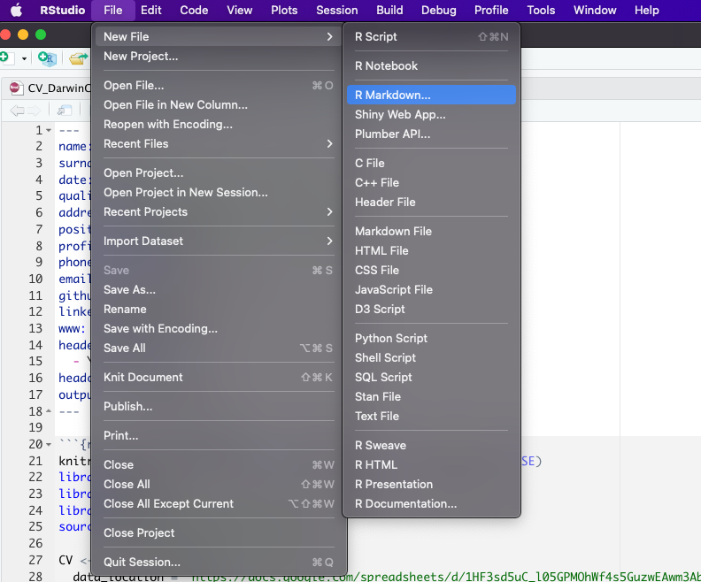
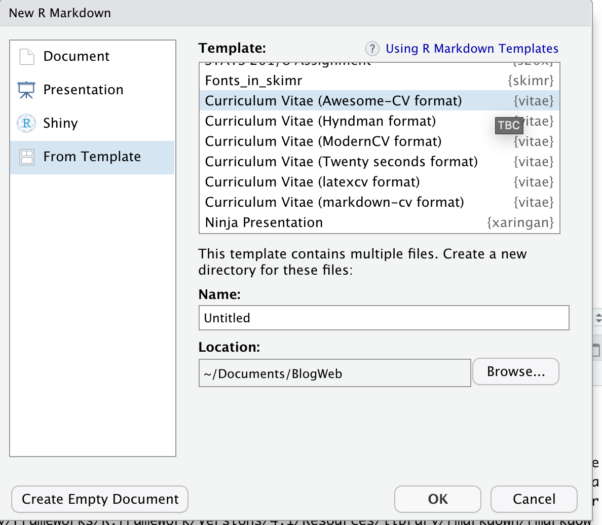
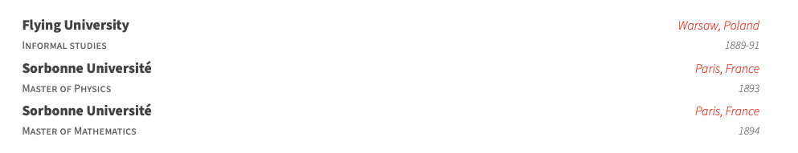

CV en R
Al ingresar al mundo laboral o en la búsqueda de nuevas oportunidades de empleo todos hemos estado en la tarea de crear o actualizar nuestro curriculum y casi siempre la principal herramienta es Word seguido de Canva o Adobe ilustrator (para los mas avanzados). Las dos ultimas opciones si bien ofrecen mucha personalización en cuanto diseño no permiten tanta flexibilidad al momento de actualizar información o que se adapten facilmente a un flujo de trabajo. Por otro lado Word tienen plantillas con diseños algo sosos y la lucha constante con las alineaciones, sangrados y estilos al momento de ingresar nueva información.
Hace un par de años me enfrente a este problema y tuve la suerte de encontrar la solución en el paquete vitae desarrollado por Mitchell O’Hara-Wild. Este paquete permite crear un cv con 6 tipos de formato:
- Awesome-CV format
- Hydman
- ModernCV
- Twenty seconds
- latexcv
- markdown-cv
Aquí puede ver los ejemplos de los diferentes formatos junto con su código fuente. En los personal me agrada la plantilla Awesome-CV y de hecho todo este tutorial se desarrollada enfocada a este estilo de cv.
Primero deberá crear un proyecto en Rstudio pues aprovecharemos el control de versiones git, en este enlace podrá encontrar el paso a paso de como crear un proyecto con control de versiones git.
El primer paso será instalar el paquete vitae
install.packages("vitae")y luego crear una plantilla de awesome cv con markdown
  Esto creara la siguiente plantilla
 Para compilar deberá dar click en ‘Knit’ y tendrá el siguiente pdf
Para compilar deberá dar click en ‘Knit’ y tendrá el siguiente pdf
 En los parámetros YAML puede especificar datos como nombre, posición, dirección, email, etc. Aquí podrá encontrar más detalle acerca de cada parámetro disponible.
En los parámetros YAML puede especificar datos como nombre, posición, dirección, email, etc. Aquí podrá encontrar más detalle acerca de cada parámetro disponible.
Las datos para el cv se ingresan en un tribble y se transforman a formato awesome con la función detailed_entries() que tiene los parametros:
- data: tribble, tibble o dataframe con los datos
- what: nombre de la actividad o titulo
- when: fecha de la actividad o titulo
- with: empresa o institución
- where: lugar de la actividad o titulo
- why : para datos adicionales (estos pueden ser una lista de valores)
También existe función brief_entries(data, what, when, with, .protect = TRUE) que es similar pero con menos argumentos. Para mas informacion acerca de estas funciones puede escribir en la consola ?detailed_entries o ?brief_entries
El siguiente código
tribble(
~ Degree, ~ Year, ~ Institution, ~ Where,
"Informal studies", "1889-91", "Flying University", "Warsaw, Poland",
"Master of Physics", "1893", "Sorbonne Université", "Paris, France",
"Master of Mathematics", "1894", "Sorbonne Université", "Paris, France"
) %>%
detailed_entries(Degree, Year, Institution, Where)al compilar a pdf creará
 Hasta este punto habra credo un cv funcional y no tendrá que preocuparse del diseño, sangrado o alineación del texto. Pero aun sigue siendo engorroso tener los datos y el código en el mismo lugar. Para resolver este problem tome como base el flujo de trabajo del paquete datadrivencv creado por Nick Strayer.
Guardar sus datos en Google sheets
Utilizaremos el paquete googlesheets4 para descargar los datos de nuestro cv desde una hoja de calculo de Google. Sugiero copiar mi hoja y reemplazar sus datos.
 El documento tiene las siguientes:
El documento tiene las siguientes:
- entries: información acerca de educación, experiencia laboral, certificaciones, etc.
- lenguaje_skills: herramientas o habilidades que maneja.
- post_info: informacion acerca de post.
- text_block: informacion adicional como su descripción profesional o intereses.
- contact_info: información de contacto (email, teléfono, etc)
Crear funciones personalizadas
La siguiente función permite crear un objeto con toda la información de la hoja de calculo,
- data_location: es el link de la hoja de calculo de google sheet
- pdf_mode: si es TRUE se eliminan los link de los textos.
- sheet_is_publicly_readable: TRUE si el link de la hoja de calculo es público
create_CV_object <- function(data_location,
pdf_mode = FALSE,
sheet_is_publicly_readable = TRUE) {
cv <- list(
pdf_mode = pdf_mode,
links = c()
)
is_google_sheets_location <- stringr::str_detect(data_location, "docs\\.google\\.com")
if(is_google_sheets_location){
if(sheet_is_publicly_readable){
# This tells google sheets to not try and authenticate. Note that this will only
# work if your sheet has sharing set to "anyone with link can view"
googlesheets4::gs4_deauth()
} else {
# My info is in a public sheet so there's no need to do authentication but if you want
# to use a private sheet, then this is the way you need to do it.
# designate project-specific cache so we can render Rmd without problems
options(gargle_oauth_cache = ".secrets")
}
read_gsheet <- function(sheet_id){
googlesheets4::read_sheet(data_location, sheet = sheet_id, skip = 1, col_types = "c")
}
cv$entries_data <- read_gsheet(sheet_id = "entries")
cv$skills <- read_gsheet(sheet_id = "language_skills")
cv$text_blocks <- read_gsheet(sheet_id = "text_blocks")
cv$contact_info <- read_gsheet(sheet_id = "contact_info")
cv$post_info <- read_gsheet(sheet_id = "post_info")
} else {
# Want to go old-school with csvs?
cv$entries_data <- readr::read_csv(paste0(data_location, "entries.csv"), skip = 1)
cv$skills <- readr::read_csv(paste0(data_location, "language_skills.csv"), skip = 1)
cv$text_blocks <- readr::read_csv(paste0(data_location, "text_blocks.csv"), skip = 1)
cv$contact_info <- readr::read_csv(paste0(data_location, "contact_info.csv"), skip = 1)
cv$post_info <- readr::read_csv(paste0(data_location, "post_info.csv"), skip = 1)
}
extract_year <- function(dates){
date_year <- stringr::str_extract(dates, "(20|19)[0-9]{2}")
date_year[is.na(date_year)] <- lubridate::year(lubridate::ymd(Sys.Date())) + 10
date_year
}
parse_dates <- function(dates){
date_month <- stringr::str_extract(dates, "(\\w+|\\d+)(?=(\\s|\\/|-)(20|19)[0-9]{2})")
date_month[is.na(date_month)] <- "1"
paste("1", date_month, extract_year(dates), sep = "-") %>%
lubridate::dmy()
}
# Clean up entries dataframe to format we need it for printing
cv$entries_data %<>%
tidyr::unite(
tidyr::starts_with('description'),
col = "description_bullets",
sep = "\n- ",
na.rm = TRUE
) %>%
dplyr::mutate(description_bullets = as.list(strsplit(description_bullets , "\n- ")) ) %>%
dplyr::mutate(
# description_bullets = ifelse(description_bullets != "", paste0("- ", description_bullets), ""),
start = ifelse(start == "NULL", NA, start),
end = ifelse(end == "NULL", NA, end),
start_year = extract_year(start),
end_year = extract_year(end),
no_start = is.na(start),
has_start = !no_start,
no_end = is.na(end),
has_end = !no_end,
timeline = dplyr::case_when(
no_start & no_end ~ "N/A",
no_start & has_end ~ as.character(end),
has_start & no_end ~ paste("Current", "-", start),
TRUE ~ paste(end, "-", start)
)
) %>%
dplyr::arrange(desc(parse_dates(end))) %>%
dplyr::mutate_all(~ ifelse(is.na(.), 'N/A', .))
cv
}Esta función elimina los links de un texto
sanitize_links <- function(cv, text){
if(cv$pdf_mode){
link_titles <- stringr::str_extract_all(text, '(?<=\\[).+?(?=\\])')[[1]]
link_destinations <- stringr::str_extract_all(text, '(?<=\\().+?(?=\\))')[[1]]
n_links <- length(cv$links)
n_new_links <- length(link_titles)
if(n_new_links > 0){
# add links to links array
cv$links <- c(cv$links, link_destinations)
# Build map of link destination to superscript
link_superscript_mappings <- purrr::set_names(
paste0("<sup>", (1:n_new_links) + n_links, "</sup>"),
paste0("(", link_destinations, ")")
)
# Replace the link destination and remove square brackets for title
text <- text %>%
stringr::str_replace_all(stringr::fixed(link_superscript_mappings)) %>%
stringr::str_replace_all('\\[(.+?)\\]', "\\1")
}
}
list(cv = cv, text = text)
}También se necesita funciones para imprimir los datos descargados
# print text block
print_text_block <- function(cv, label){
text_block <- dplyr::filter(cv$text_blocks, loc == label) %>%
dplyr::pull(text)
strip_res <- sanitize_links(cv, text_block)
cat(strip_res$text)
invisible(strip_res$cv)
}
# print table of skills
print_skill <- function(cv){
glue_template <- "
\\cvskill{<<group>>}{<<skills>>}"
skills_formatted <- cv$skills %>%
mutate(skill = if_else(is.na(details)|details=="", glue::glue("{skill}"), glue::glue("{skill} ({details})"))) %>%
group_by(group) %>%
summarize(skills = glue::glue_collapse(skill, sep = ", "))
cv_skill <- skills_formatted %>%
glue::glue_data(glue_template, .open = "<<", .close = ">>" ) %>%
paste0(., collapse = '\n')
cv_skill_env <- paste0('\n\\begin{cvskills}\n', cv_skill, '\n\\end{cvskills}\n' , collapse= '\n')
cat(cv_skill_env)
invisible(cv)
}
# print table of posts
print_post<- function(cv, glue_template = "default"){
if(glue_template == "default"){
glue_template <- "
- [{name}]({link})
\n"
}
print(glue::glue_data(cv$post_info , glue_template))
invisible(cv)
}Bien, ahora reemplacemos
knitr::opts_chunk$set(echo = FALSE, warning = FALSE, message = FALSE)
library(vitae)por esto, para poder usar las funciones anteriores
knitr::opts_chunk$set(echo = FALSE, warning = FALSE, message = FALSE)
library(vitae)
library(dplyr)
library(magrittr)
source("Utils/data_download_funs.R")
CV <- create_CV_object(
data_location = "https://docs.google.com/spreadsheets/d/19YWFjpiCqTbrwrU1hpxDNubZKoNi-o0DvOQbcHqsc7c/edit?usp=sharing",
pdf_mode = FALSE
)Para la sección de Educación podemos reemplazar
library(tibble)
tribble(
~ Degree, ~ Year, ~ Institution, ~ Where,
"Informal studies", "1889-91", "Flying University", "Warsaw, Poland",
"Master of Physics", "1893", "Sorbonne Université", "Paris, France",
"Master of Mathematics", "1894", "Sorbonne Université", "Paris, France"
) %>%
detailed_entries(what = Degree, when = Year, with = Institution, where = Where)por
CV$entries_data %>%
filter(section == 'education') %>%
detailed_entries(
what = institution,
when = glue::glue("{`start`} - {`end`}"),
with = title,
where = loc,
why = description_bullets
)Para imprimir sus habilidades
CV %>% print_skill()Para imprimir sus posts
CV %<>% print_post()Todos los archivos se encuentran alojado aquí.
Quiero agredecer a Nick Strayer y Mitchell O’Hara-Wild por el maravilloso trabajo realizado en el paquete vitae y datadrivencv.